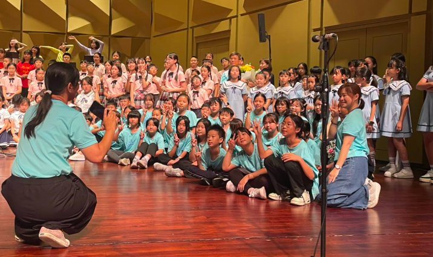

The “Mei-Hao Nian-Nian Music Education Project” has sown seeds of music across Changhua in recent years, funding the founding of choirs at many schools. Last year, Hsinmin was honored to join this warm family and officially founded the Hsinmin Choir — and on May 30 we finally celebrated the project's grand annual concert.
The children had been excited since they first learned of the event over winter break, pouring in countless hours of effort, and even traveling to Puyan Elementary on April 29 for a joint cross-school rehearsal. On performance day they arrived early, full of barely-contained excitement, warming up on an outdoor stepped stage whose open air carried their pure joy to every corner.
They performed at the professional Yuanlin Performance Hall — for many children, their first time on such a formal stage. Taking part in a mass choir of nearly 300 singers, they showed remarkable self-discipline and focus, following the conductor's every cue so the afternoon's performance would be perfect. The concert also featured the professional “Fei-Fei Art Troupe,” showing the children how to pour their whole heart and body into a song — a wonderful artistic baptism.
In the breath-taking final mass chorus, as Hsinmin's children sang shoulder-to-shoulder with all the performers, 300 voices resonated as one and bound everyone's hearts together. This was more than a performance — it was a seed of music planted deep in each child's heart. The Hsinmin Choir has proven with their voices: our future is definitely not a dream!

「庭芳美好年年音樂培育計畫」這幾年在彰化縣播下了音樂的種子，資助了許多學校成立校內合唱團。從去年開始，新民國小非常榮幸地加入了這個溫暖的大家庭，正式成立了「新民合唱團」！就在剛剛過去的 5 月 30 日，我們終於迎來了屬於這個計畫的盛大音樂饗宴。🥰
孩子們早在寒假期間知道這個活動時，期待的火苗就被點燃了！這些日子以來，大家為了這個舞台付出了無數的努力與汗水，4 月 29 日下午更特別前往埔鹽國小進行了大合唱的跨校彩排練習。演出日一早，孩子們帶著藏不住的雀躍神情提早到校、搭上遊覽車，抵達演藝廳後在戶外的階梯式舞台展開發聲練習，讓純淨的喜悅透過歌聲傳遞到場館外的每一個角落！🍃🎶
這次演出在專業的員林演藝廳。對許多孩子來說，這或許是他們第一次踏上如此正式的舞台。我們參與的是將近 300 人的大合唱演出，孩子們展現出高度的自律，無比專注地聆聽總指揮老師的每一個指令，就是希望能把演出做到最完美！主辦單位更邀請了專業的「非非藝術團隊」帶來震撼人心的演唱，讓孩子們看到如何用全身心的投入與肢體語言，將情感完全融入歌曲——這無疑是一場最棒的藝術洗禮！
終於來到令人屏息的最後大合唱。當新民的孩子們站在舞台上，與所有演出者並肩齊唱的那一刻，300 人共同激盪出的強大共鳴，彷彿將現場所有人的心緊緊凝聚在一起。❤️ 這不只是一場演出，更是一顆深深埋進孩子心底的音樂種子。未來的路還很長，但新民合唱團的孩子們已經用歌聲證明——我們的未來，絕對不是夢！🚀🌈